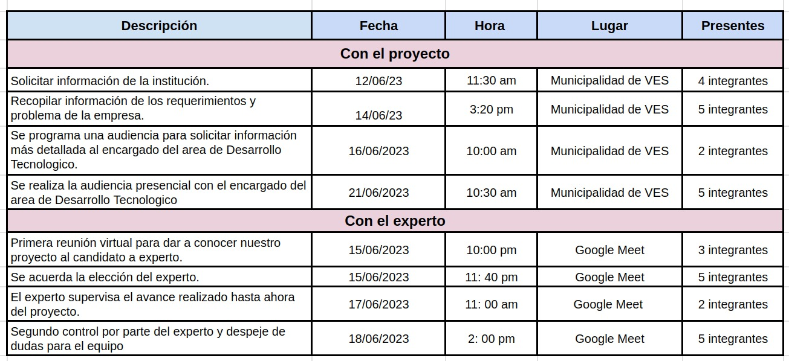

Entradas
Caso de la institución
La Municipalidad de Villa el Salvador es una institución pública dedicada a brindar servicios esenciales a la comunidad y promover el bienestar de sus ciudadanos. Sin embargo como en muchas instituciones, el flujo de datos y la transmisión de información se han vuelto cruciales para el desarrollo eficiente de sus labores teniendo la necesidad de optimizar la transmisión de datos en la Municipalidad.
Nuestro proyecto plantea el proyecto de implementación de Vlans para mejorar la transmisión de datos en la Municipalidad de Villa el Salvador. Esta iniciativa tiene como objetivo fundamental optimizar la velocidad, rendimiento, estabilidad y seguridad de la red de datos, permitiendo una mejor comunicación interna y una gestión más eficiente de la información.
Herramientas y Técnicas
Analisis de datos
Reuniones

Juicio de Expertos
Se refiere a un proceso en el cual se solicita la opinión o valoración de personas consideradas expertas en un determinado campo o tema. Estas personas poseen conocimientos especializados y experiencia relevante en el área en cuestión.
Es importante tener en cuenta que el juicio de expertos no es infalible y está sujeto a sesgos o errores inherentes a la subjetividad humana. Sin embargo, en muchas situaciones, el juicio de expertos puede ser una herramienta útil para complementar los datos y ayudar a obtener una mejor comprensión de un tema o tomar decisiones informadas en ausencia de información completa o precisa.
| FICHA DE REGISTRO DE EXPERTO |
|---|

| DATOS PERSONALES | |
|---|---|
| Apellidos | Diaz Pomayala |
| Nombre | José Luis |
| Género | Masculino |
| País de nacimiento | Perú |
| Linkedln | https://www.linkedin.com/in/jos%C3%A9-luis-diaz-pomalaya-55615966/ |
| PROYECTOS | |
|---|---|
| Proyecto que lleva internet de alta velocidad a 291 localidades de la Región Lima | Miembro del equipo de proyecto. |
| Proyecto Canon en Cuzco | Analista de negocio |
Salidas
Plan de gestión de alcance